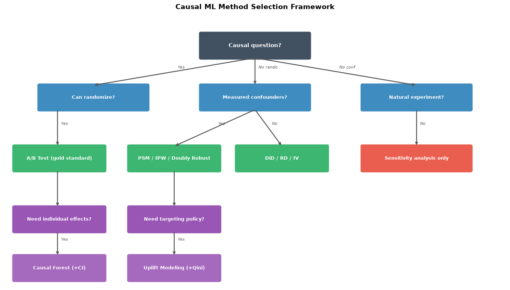
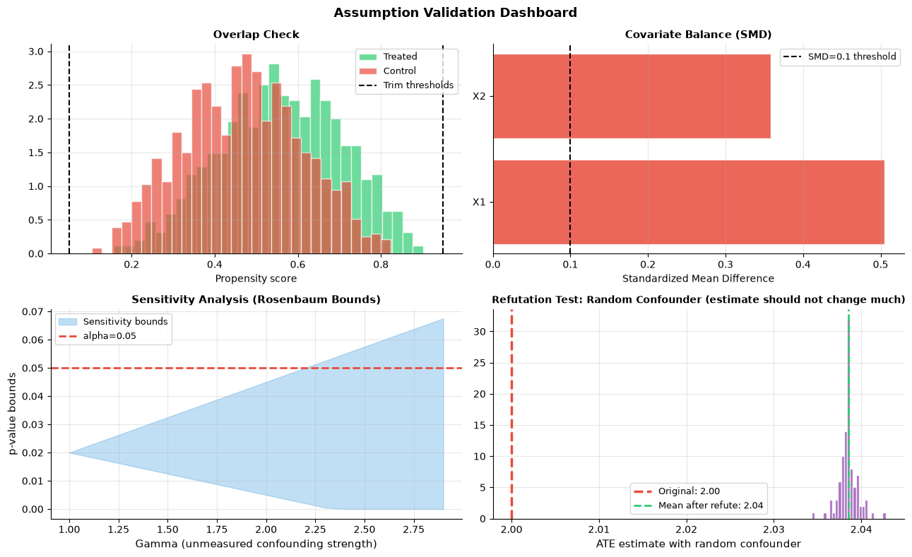
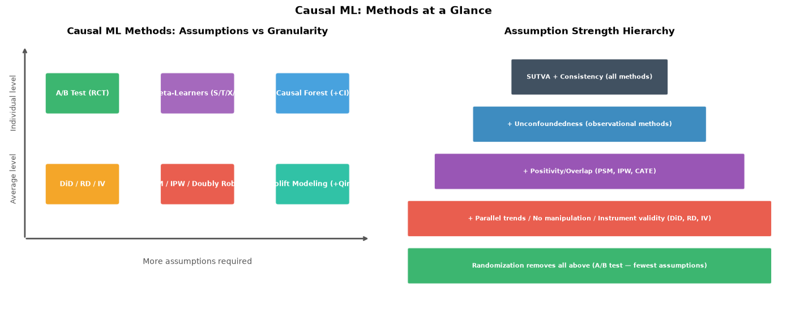

How do you apply Causal ML end-to-end?#
Topics: Problem Framing · Method Selection · Assumption Checking · Estimation · Evaluation · Sensitivity Analysis · Communication · Cross-Cutting Interview Questions · Systematic Insights
1. End-to-End Pipeline#
Step 1 — Problem framing#
Is this a prediction problem or a causal/decision problem?
What is the treatment? What is the outcome? What is the unit of analysis?
What decision will this analysis inform?
Step 2 — Draw the DAG#
List all variables: treatment, outcome, covariates, potential confounders
Draw arrows based on domain knowledge
Identify adjustment set — what to control for
Step 3 — Choose identification strategy#
Data situation |
Method |
|---|---|
You can randomize |
A/B test |
Observational, measured confounders |
PSM, IPW, Doubly Robust |
Observational, unmeasured confounders |
DiD, RD, IV |
Want individual-level effects |
Meta-learners, Causal Forest |
Want targeting policy |
Uplift modeling |
Step 4 — Check assumptions#
Run every diagnostic before trusting your estimate
Document which assumptions are untestable and why you believe them
Step 5 — Estimate#
Start simple: DiD or doubly robust estimator
Add complexity only if simpler method fails diagnostics
Step 6 — Evaluate#
Report effect size AND confidence interval — not just p-value
Run sensitivity analysis — how robust is the estimate?
Step 7 — Decision#
Translate estimate into business action
Communicate uncertainty to stakeholders honestly
import numpy as np
import matplotlib.pyplot as plt
import matplotlib.patches as mpatches
# Method selection decision tree
fig, ax = plt.subplots(figsize=(14, 8))
ax.set_xlim(0, 14); ax.set_ylim(0, 9); ax.axis('off')
ax.set_title('Causal ML Method Selection Framework', fontsize=14, fontweight='bold')
def box(ax, x, y, w, h, label, color, fontsize=9):
rect = mpatches.FancyBboxPatch((x, y), w, h,
boxstyle='round,pad=0.07', facecolor=color, edgecolor='white', linewidth=1.5, alpha=0.9)
ax.add_patch(rect)
ax.text(x+w/2, y+h/2, label, ha='center', va='center',
fontsize=fontsize, fontweight='bold', color='white')
def arr(ax, x1, y1, x2, y2, label=''):
ax.annotate('', xy=(x2, y2), xytext=(x1, y1),
arrowprops=dict(arrowstyle='->', color='#555', lw=1.8))
if label:
ax.text((x1+x2)/2+0.1, (y1+y2)/2+0.1, label, fontsize=8, color='#555', style='italic')
box(ax, 5.5, 7.5, 3.0, 0.8, 'Causal question?', '#2C3E50', 11)
box(ax, 1.0, 5.8, 3.0, 0.8, 'Can randomize?', '#2980B9')
box(ax, 5.5, 5.8, 3.0, 0.8, 'Measured confounders?', '#2980B9')
box(ax, 10.0, 5.8, 3.0, 0.8, 'Natural experiment?', '#2980B9')
box(ax, 0.3, 3.8, 2.5, 0.8, 'A/B Test (gold standard)', '#27AE60')
box(ax, 3.5, 3.8, 2.5, 0.8, 'PSM / IPW / Doubly Robust', '#27AE60')
box(ax, 6.5, 3.8, 2.5, 0.8, 'DiD / RD / IV', '#27AE60')
box(ax, 10.0, 3.8, 3.0, 0.8, 'Sensitivity analysis only', '#E74C3C')
box(ax, 0.3, 1.8, 2.5, 0.8, 'Need individual effects?', '#8E44AD')
box(ax, 3.5, 1.8, 2.5, 0.8, 'Need targeting policy?', '#8E44AD')
box(ax, 0.3, 0.2, 2.5, 0.8, 'Causal Forest (+CI)', '#9B59B6')
box(ax, 3.5, 0.2, 2.5, 0.8, 'Uplift Modeling (+Qini)', '#9B59B6')
arr(ax, 7.0, 7.5, 2.5, 6.6, 'Yes')
arr(ax, 7.0, 7.5, 7.0, 6.6, 'No rando')
arr(ax, 7.0, 7.5, 11.5, 6.6, 'No conf')
arr(ax, 1.5, 5.8, 1.5, 4.6, 'Yes')
arr(ax, 7.0, 5.8, 4.75, 4.6, 'Yes')
arr(ax, 7.0, 5.8, 7.75, 4.6, 'No')
arr(ax, 11.5, 5.8, 11.5, 4.6, 'No')
arr(ax, 1.5, 3.8, 1.5, 2.6, '')
arr(ax, 4.75, 3.8, 4.75, 2.6, '')
arr(ax, 1.5, 1.8, 1.5, 1.0, 'Yes')
arr(ax, 4.75, 1.8, 4.75, 1.0, 'Yes')
plt.tight_layout()
plt.savefig('method_selection.png', dpi=120, bbox_inches='tight')
plt.show()

2. Assumption Validation Checklist#
Use this checklist before trusting any causal estimate:
For ALL methods#
SUTVA: Can units affect each other? (network effects, market effects)
Consistency: Is treatment well-defined and consistently applied?
Positivity: Do all covariate combinations appear in both treatment and control?
For A/B tests#
Balance check: Are covariates balanced between groups?
Stable conditions: Did any external event occur during the experiment?
No peeking: Was sample size determined before experiment?
Multiple testing: Were corrections applied for multiple metrics?
For PSM/IPW/Doubly Robust#
Overlap plot: Do propensity score distributions overlap?
Balance after matching: SMD < 0.1 for all covariates?
Sensitivity analysis: How much unmeasured confounding changes the conclusion?
For DiD#
Parallel trends plot: Are pre-period trends parallel?
Placebo test: Does applying DiD to pre-period show no effect?
No anticipation: Did units change behavior before treatment?
For CATE/Uplift/Causal Forest#
Overlap: Are propensity scores well within (0.05, 0.95)?
Calibration: Does predicted CATE match actual uplift by decile?
Refutation test: Does adding random confounder change estimates significantly?
Sensitivity analysis (for every observational estimate)#
Report a robustness number: Rosenbaum Γ, E-value, or Oster’s δ — see
cml3§6State the breakpoint in plain language: how strong a hidden confounder would have to be
import numpy as np
import matplotlib.pyplot as plt
from sklearn.linear_model import LogisticRegression
from sklearn.preprocessing import StandardScaler
np.random.seed(42)
n = 2000
X1 = np.random.randn(n); X2 = np.random.randn(n)
X = np.column_stack([X1, X2])
T = np.random.binomial(1, 1/(1+np.exp(-(0.5*X1+0.3*X2))), n)
Y = 2.0*T + 1.5*X1 + np.random.randn(n)
scaler = StandardScaler()
X_sc = scaler.fit_transform(X)
lr = LogisticRegression(); lr.fit(X_sc, T)
ps = lr.predict_proba(X_sc)[:,1]
fig, axes = plt.subplots(2, 2, figsize=(13, 8))
# 1. Overlap plot
axes[0,0].hist(ps[T==1], bins=30, alpha=0.7, color='#2ECC71', label='Treated', edgecolor='white', density=True)
axes[0,0].hist(ps[T==0], bins=30, alpha=0.7, color='#E74C3C', label='Control', edgecolor='white', density=True)
axes[0,0].axvline(0.05, color='black', linewidth=1.5, linestyle='--', label='Trim thresholds')
axes[0,0].axvline(0.95, color='black', linewidth=1.5, linestyle='--')
axes[0,0].set_title('Overlap Check', fontsize=11, fontweight='bold')
axes[0,0].set_xlabel('Propensity score'); axes[0,0].legend(fontsize=9)
axes[0,0].grid(True, alpha=0.3)
axes[0,0].spines['top'].set_visible(False); axes[0,0].spines['right'].set_visible(False)
# 2. Covariate balance
from scipy import stats
cov_names = ['X1', 'X2']
smd = [abs(X1[T==1].mean()-X1[T==0].mean()) / np.sqrt((X1[T==1].var()+X1[T==0].var())/2),
abs(X2[T==1].mean()-X2[T==0].mean()) / np.sqrt((X2[T==1].var()+X2[T==0].var())/2)]
colors = ['#2ECC71' if s < 0.1 else '#E74C3C' for s in smd]
axes[0,1].barh(cov_names, smd, color=colors, alpha=0.85, edgecolor='white')
axes[0,1].axvline(0.1, color='black', linewidth=1.5, linestyle='--', label='SMD=0.1 threshold')
axes[0,1].set_title('Covariate Balance (SMD)', fontsize=11, fontweight='bold')
axes[0,1].set_xlabel('Standardized Mean Difference'); axes[0,1].legend(fontsize=9)
axes[0,1].grid(True, alpha=0.3, axis='x')
axes[0,1].spines['top'].set_visible(False); axes[0,1].spines['right'].set_visible(False)
# 3. Sensitivity analysis (Rosenbaum bounds conceptual)
gammas = np.arange(1.0, 3.0, 0.1)
p_lower = [max(0, 0.02 - 0.015*(g-1)) for g in gammas]
p_upper = [min(1, 0.02 + 0.025*(g-1)) for g in gammas]
axes[1,0].fill_between(gammas, p_lower, p_upper, alpha=0.3, color='#3498DB', label='Sensitivity bounds')
axes[1,0].axhline(0.05, color='#E74C3C', linewidth=2, linestyle='--', label='alpha=0.05')
axes[1,0].set_xlabel('Gamma (unmeasured confounding strength)', fontsize=11)
axes[1,0].set_ylabel('p-value bounds', fontsize=11)
axes[1,0].set_title('Sensitivity Analysis (Rosenbaum Bounds)', fontsize=11, fontweight='bold')
axes[1,0].legend(fontsize=9); axes[1,0].grid(True, alpha=0.3)
axes[1,0].spines['top'].set_visible(False); axes[1,0].spines['right'].set_visible(False)
# 4. Refutation test — add random confounder
from sklearn.linear_model import LinearRegression
original_est = 2.0
refute_ests = []
for _ in range(100):
random_conf = np.random.randn(n)
X_ref = np.column_stack([X1, X2, random_conf])
m = LinearRegression()
m.fit(np.column_stack([T, X_ref]), Y)
refute_ests.append(m.coef_[0])
axes[1,1].hist(refute_ests, bins=25, color='#9B59B6', alpha=0.85, edgecolor='white')
axes[1,1].axvline(original_est, color='#E74C3C', linewidth=2.5, linestyle='--', label=f'Original: {original_est:.2f}')
axes[1,1].axvline(np.mean(refute_ests), color='#2ECC71', linewidth=2, linestyle='--',
label=f'Mean after refute: {np.mean(refute_ests):.2f}')
axes[1,1].set_xlabel('ATE estimate with random confounder', fontsize=11)
axes[1,1].set_title('Refutation Test: Random Confounder (estimate should not change much)', fontsize=10, fontweight='bold')
axes[1,1].legend(fontsize=9); axes[1,1].grid(True, alpha=0.3)
axes[1,1].spines['top'].set_visible(False); axes[1,1].spines['right'].set_visible(False)
plt.suptitle('Assumption Validation Dashboard', fontsize=13, fontweight='bold')
plt.tight_layout()
plt.savefig('assumption_validation.png', dpi=120, bbox_inches='tight')
plt.show()

3. Cross-Cutting Interview Questions#
Q: Walk me through how you would approach a causal problem end-to-end.
Frame the question: what is the treatment, outcome, and unit?
Draw a DAG — identify confounders, mediators, colliders
Choose identification strategy based on data availability
Check all assumptions — document which are untestable
Estimate with appropriate method, report CI not just p-value
Run sensitivity analysis — how much unmeasured confounding would flip the conclusion?
Translate to business decision with honest uncertainty
Q: What is the difference between correlation, prediction, and causation?
Correlation: X and Y move together — no direction, no mechanism
Prediction: use X to predict Y — correlation is enough, no causation needed
Causation: changing X produces a change in Y — needed for interventions and policy
Q: How would you measure the causal impact of a new feature rollout?
Best: A/B test — randomize which users see the new feature
If already rolled out: DiD — compare change in metric before/after rollout vs similar users without it
If gradual rollout: RD — compare users just above/below the rollout threshold
Always check parallel trends or balance before trusting the estimate
Q: A stakeholder says ‘users who use feature X have 3x higher retention — we should push everyone to use X’. What do you say?
This is a correlation, not a causal effect — power users may self-select into feature X
Propensity score matching or DiD needed to estimate causal effect
The 3x figure likely includes selection bias — engaged users would retain regardless
Recommend an A/B test if possible — randomly prompt some users to try feature X
Q: How do you explain a causal estimate to a non-technical stakeholder?
Avoid jargon — say ‘users who received the discount retained at 5% higher rate’
Always give a range: ‘we estimate between 3% and 7% improvement’
Be clear about what assumption was needed: ‘this assumes the two groups were otherwise similar’
Be honest about uncertainty: ‘we cannot rule out that a hidden factor explains this’
Q: Your DiD analysis shows a significant effect but your A/B test shows no effect. What’s wrong?
Parallel trends assumption likely violated in DiD — the two groups were trending differently before treatment
Check pre-period trends plot — if they diverge, DiD estimate is biased
Trust the A/B test — it requires fewer assumptions
Investigate: did something else change at the same time as the treatment?
4. Systematic Insights#
When Causal ML fits into the DS workflow#
Prediction (standard ML)
↓
Who is at risk? (churn, fraud, illness)
↓
Causal ML
↓
Who will RESPOND to intervention?
↓
Decision / Policy
↓
Who should we target, and with what action?
Common mistakes practitioners make#
Mistake |
Why it is wrong |
Fix |
|---|---|---|
Controlling for mediators |
Blocks the causal path you want to measure |
Draw DAG first — only control confounders |
Conditioning on colliders |
Opens spurious associations |
Identify colliders in DAG — do not control |
Ignoring positivity |
IPW weights explode, estimates unreliable |
Always plot propensity score overlap |
Skipping sensitivity analysis |
One unmeasured confounder can flip conclusion |
Always report Rosenbaum bounds or similar |
Reporting only p-value |
Statistically significant ≠ practically significant |
Always report effect size and CI |
Using feature importance as causal |
RF importance is predictive, not causal |
Use causal forest importance instead |
Running DiD without parallel trends check |
Assumption can be badly violated |
Always plot pre-period trends |
How methods relate to each other#
More assumptions required → |
Less assumptions required → |
|---|---|
A/B test (fewest) |
Observational methods (more) |
RCT |
PSM/IPW |
DiD/RD/IV |
Sensitivity analysis only |
More average → |
More individual → |
|---|---|
ATE (population average) |
CATE (subgroup level) |
DiD, A/B test |
Meta-learners, causal forest |
When to escalate to A/B test#
Any time you cannot achieve parallel trends
Any time positivity is severely violated
Any time your stakeholder needs a definitive answer
Any time the business decision is high-stakes
Sensitivity analysis as standard practice (see cml3 §6 for the actual tools)#
Every observational causal estimate should include sensitivity analysis
Report: ‘the conclusion holds as long as unmeasured confounding is no stronger than X’
If X is implausibly small → the estimate is fragile → be cautious
If X is very large → the estimate is robust → more confidence
import numpy as np
import matplotlib.pyplot as plt
# Visualize the relationship between all Causal ML methods
fig, axes = plt.subplots(1, 2, figsize=(14, 6))
ax = axes[0]
ax.set_xlim(0, 10); ax.set_ylim(0, 8); ax.axis('off')
ax.set_title('Causal ML Methods: Assumptions vs Granularity', fontsize=12, fontweight='bold')
import matplotlib.patches as mpatches
# X axis: assumptions (few → many)
# Y axis: granularity (average → individual)
methods = [
(2.0, 6.5, 'A/B Test (RCT)', '#27AE60', 1.8),
(2.0, 4.0, 'DiD / RD / IV', '#F39C12', 1.8),
(5.0, 4.0, 'PSM / IPW / Doubly Robust', '#E74C3C', 1.8),
(5.0, 6.5, 'Meta-Learners (S/T/X/R)', '#9B59B6', 1.8),
(8.0, 6.5, 'Causal Forest (+CI)', '#3498DB', 1.8),
(8.0, 4.0, 'Uplift Modeling (+Qini)', '#1ABC9C', 1.8),
]
for x, y, label, color, w in methods:
rect = mpatches.FancyBboxPatch((x-w/2, y-0.5), w, 1.0,
boxstyle='round,pad=0.07', facecolor=color, edgecolor='white', linewidth=1.5, alpha=0.9)
ax.add_patch(rect)
ax.text(x, y, label, ha='center', va='center', fontsize=8.5, fontweight='bold', color='white')
ax.annotate('', xy=(9.5, 2.5), xytext=(0.5, 2.5),
arrowprops=dict(arrowstyle='->', color='#555', lw=2))
ax.annotate('', xy=(0.5, 7.8), xytext=(0.5, 2.5),
arrowprops=dict(arrowstyle='->', color='#555', lw=2))
ax.text(5.0, 1.8, 'More assumptions required', ha='center', fontsize=10, color='#555')
ax.text(0.2, 5.5, 'Individual level', ha='center', fontsize=9, color='#555', rotation=90)
ax.text(0.2, 3.5, 'Average level', ha='center', fontsize=9, color='#555', rotation=90)
# Assumption pyramid
ax2 = axes[1]
ax2.set_xlim(0, 10); ax2.set_ylim(0, 8); ax2.axis('off')
ax2.set_title('Assumption Strength Hierarchy', fontsize=12, fontweight='bold')
layers = [
(3.0, 6.5, 4.0, 0.9, 'SUTVA + Consistency (all methods)', '#2C3E50'),
(2.0, 5.2, 6.0, 0.9, '+ Unconfoundedness (observational methods)', '#2980B9'),
(1.0, 3.9, 8.0, 0.9, '+ Positivity/Overlap (PSM, IPW, CATE)', '#8E44AD'),
(0.3, 2.6, 9.4, 0.9, '+ Parallel trends / No manipulation / Instrument validity (DiD, RD, IV)', '#E74C3C'),
(0.3, 1.3, 9.4, 0.9, 'Randomization removes all above (A/B test — fewest assumptions)', '#27AE60'),
]
for x, y, w, h, label, color in layers:
rect = mpatches.FancyBboxPatch((x, y), w, h,
boxstyle='round,pad=0.05', facecolor=color, edgecolor='white', linewidth=1.5, alpha=0.9)
ax2.add_patch(rect)
ax2.text(x+w/2, y+h/2, label, ha='center', va='center',
fontsize=8, fontweight='bold', color='white')
plt.suptitle('Causal ML: Methods at a Glance', fontsize=14, fontweight='bold')
plt.tight_layout()
plt.savefig('causal_ml_overview.png', dpi=120, bbox_inches='tight')
plt.show()
